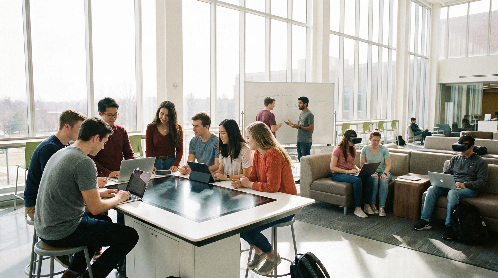
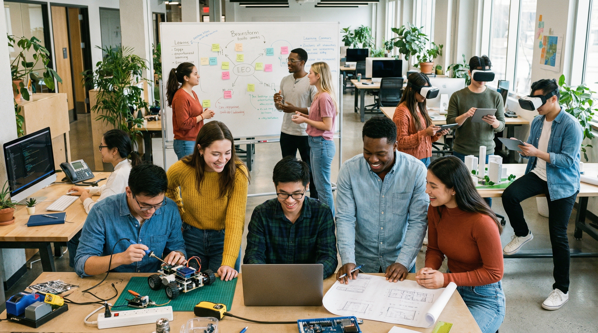
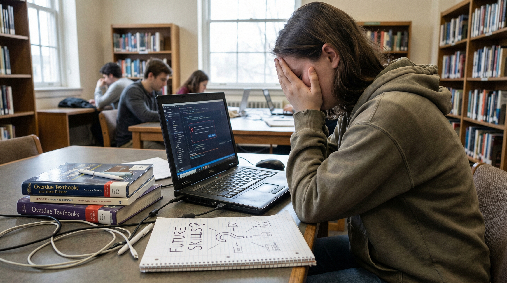
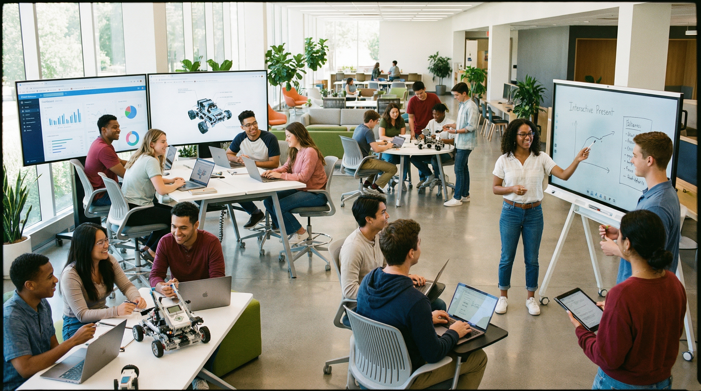

Building Skills for the Future
Introduction

Education today is not only about passing exams or memorising facts. It is also about preparing students for the future by helping them develop the knowledge, abilities, and attitudes needed to succeed in modern life. These abilities are often called future skills because they are important for careers, communication, problem-solving, and personal growth in a rapidly changing world.
As technology, workplaces, and societies continue to evolve, students need more than academic knowledge alone. They also need practical skills such as digital literacy, critical thinking, teamwork, creativity, and adaptability. These skills help learners become more confident, capable, and ready to face new challenges and opportunities.
Future skills are closely connected to Sustainable Development Goal 4: Quality Education, because good education should prepare learners not only for today, but also for tomorrow. By focusing on future skills, education can become more relevant, empowering, and useful for real life.
Essential Skills for the Future

There are many skills that are considered important for the future. One of the most essential is digital literacy. In a world where technology is part of education, work, and daily life, students need to know how to use digital tools effectively, safely, and responsibly.
Another key future skill is critical thinking. Students should be able to analyse information, ask questions, solve problems, and make informed decisions. This is especially important in a world where people are constantly exposed to large amounts of information online and offline.
Communication and teamwork are also highly valuable. Students often need to work with others, share ideas, listen carefully, and express themselves clearly. These social and communication skills are important in both education and future careers.
Creativity, adaptability, and self-management are also essential. Students who can think creatively, adjust to change, and manage their time effectively are more likely to succeed in fast-changing learning and working environments.
Why Future Skills Matter
Future skills matter because they help students become more prepared for life beyond the classroom. Academic knowledge is important, but students also need practical abilities that allow them to solve real problems, communicate with others, and respond confidently to new situations.
These skills can improve both academic performance and personal development. For example, students with strong communication and time management skills may be better able to organise their studies, work effectively in groups, and express their ideas more clearly.
Future skills are also important for employment. Employers increasingly look for individuals who can adapt, collaborate, think critically, and use technology confidently. By developing these skills early, students become more prepared for future careers and long-term success.
In addition, future skills support lifelong learning. As the world changes, people need to continue learning throughout their lives. Students who develop curiosity, independence, and resilience are more likely to keep learning and growing over time.
Challenges in Developing Future Skills

Although future skills are important, not all students have equal opportunities to develop them. One challenge is that some education systems still focus heavily on memorisation and exam performance rather than practical learning, creativity, and real-world problem-solving.
Another challenge is unequal access to technology and modern learning opportunities. Students who do not have reliable internet, digital devices, or supportive learning environments may struggle to build the same level of digital confidence and future readiness as others.
Some students may also face personal challenges such as low confidence, lack of guidance, or limited exposure to collaborative and interactive learning experiences. Without encouragement and support, they may not have enough chances to practise important future-focused skills.
These challenges show that preparing students for the future requires more than simply giving information. It also requires supportive environments, equal access, and learning experiences that encourage active participation and skill development.
Preparing for Tomorrow

Preparing students for tomorrow means creating education systems that support both knowledge and practical skill development. Schools and universities should provide opportunities for students to think independently, solve problems, work in teams, and use technology in meaningful ways.
Teachers can help by using more interactive and student-centred methods such as discussions, projects, presentations, and collaborative tasks. These activities allow students to build confidence and apply what they learn in more realistic and useful contexts.
Students themselves can also take action by being curious, practising communication, exploring digital tools, and taking responsibility for their own learning. Small everyday habits, such as reading, planning, asking questions, and working with others, can make a big difference over time.
By focusing on future skills, education can become more relevant and more empowering. It can help students not only succeed in exams, but also thrive in work, society, and lifelong learning.
Conclusion
Future skills are an essential part of quality education. They help students become more confident, adaptable, and prepared for the challenges and opportunities of modern life.
Skills such as digital literacy, communication, critical thinking, and creativity are increasingly important in education, careers, and society. When students are given the chance to develop these abilities, they are better equipped for long-term success.
By supporting future skills in education, schools, communities, and students themselves can contribute to Sustainable Development Goal 4 and help create a better, more capable, and more prepared generation for tomorrow.